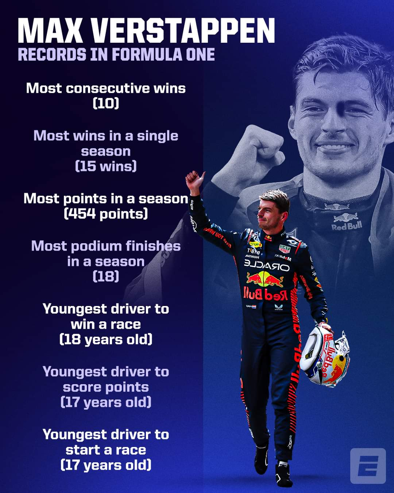
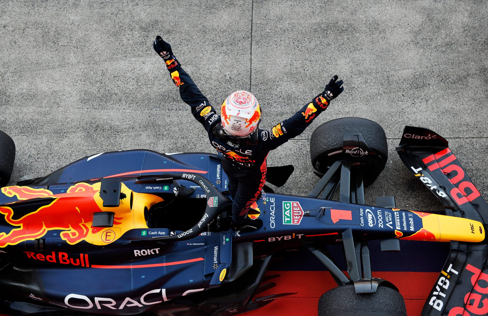

71
Grand Prix Victories
As of May 2026. Climbs every season, already among the all-time elite.
Active Record
19
Most Wins in a Season
2023 — Won 19 of 22 races. His own previous record of 15 (2022) didn't last a year.
All-Time Record
10
Consecutive Race Wins
Miami → Monza 2023. Ten in a row — a new F1 record no one thought possible.
All-Time Record
575
Points in a Season
2023. Smashed Lewis Hamilton's previous record. An astronomical single-season haul.
All-Time Record
21
Podiums in a Season
2023. Finished off the podium just once all year. Singapore was his only blemish.
All-Time Record
8
Consecutive Pole Positions
Equalling Ayrton Senna's legendary record — sharing it with an icon.
Joint Record
17
Youngest F1 Race Starter
17 years, 166 days at the 2015 Australian GP — broke Jaime Alguersuari by nearly 2 years.
All-Time Record
4
Consecutive WDC Titles
2021–2024. Only the 5th driver ever to win four or more championships.
Historic
1007
Days at Top of Standings
Broke Schumacher's record of 896 consecutive days leading the championship. 2 years, 9 months.
All-Time Record
75%
Pole-to-Win Conversion
The best pole-to-win conversion rate of any driver who has taken pole at least 5 times.
All-Time Record
10
Different Grid Positions Won From
Including a stunning 2024 São Paulo win from P17 — more grid-position diversity in wins than anyone.
All-Time Record
1:18.792
Fastest Lap in F1 History
Set at Monza, 2025 Italian Grand Prix. Beat Hamilton's 2020 benchmark by 0.095 seconds.
All-Time Record
Season By Season
| Season | Team | Wins | Poles | Podiums | Points | Position |
|---|---|---|---|---|---|---|
| 2015 | Toro Rosso | 0 | 0 | 0 | 49 | 12th |
| 2016 | Toro Rosso / Red Bull | 1 | 0 | 7 | 204 | 5th |
| 2017 | Red Bull | 2 | 2 | 8 | 168 | 6th |
| 2018 | Red Bull | 2 | 2 | 11 | 249 | 4th |
| 2019 | Red Bull | 3 | 2 | 9 | 278 | 3rd |
| 2020 | Red Bull | 2 | 1 | 11 | 214 | 3rd |
| 2021 ★ | Red Bull | 10 | 10 | 18 | 395.5 | CHAMPION |
| 2022 ★ | Red Bull | 15 | 15 | 17 | 454 | CHAMPION |
| 2023 ★ | Red Bull | 19 | 12 | 21 | 575 | CHAMPION |
| 2024 ★ | Red Bull | 9 | 9 | 14 | 437 | CHAMPION |
| 2025 | Red Bull | 6 | – | – | – | 2nd (−2 pts) |

TROPHY ROOMrecords-01.jpg
The Trophy Wall

JAPAN 2023 TITLErecords-02.jpg
Japan 2023 · Third Crown